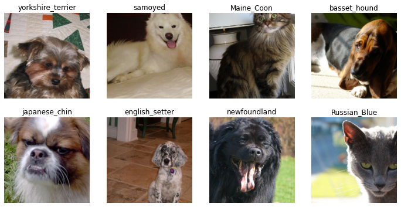
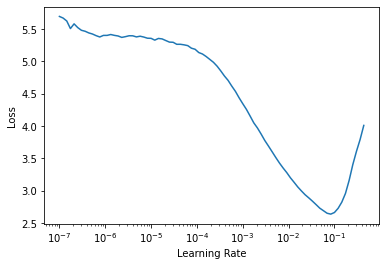

With the availability of better data storage facilities, more powerful computers and low latency networks, the commercial usage of huge datasets is rapidly growing in the field of machine learning. In this blog post, I would like to take a contrary position and advocate for the use of small datasets in making powerful deep learning applications.
Up Until Now
In 2008, Google processed 20 petabytes of data in a day. That was 13 years ago. The amount of data generated each day has been growing ever since. Which begs the question : How do we understand it and what do we do with it?
Big Data Analytics is a branch of computer science focused at analyzing large amounts of data to uncover hidden patterns, correlations and other insights. Some common techniques in Big Data Analytics are data mining, text analytics, predictive analytics, data visualization, AI, machine learning, statistics and natural language processing. There is tremendous utility in analyzing massive amounts of data but there are some inherent difficulties in this domain:
Only the people with enough compute power and data storage capacity can produce competent work.
It requires extra investment for special data processing softwares and hardwares since the traditional ones cannot deal with the huge amount of data.
Training a machine learning model in this scenario takes a lot of time and resources.
The Big Data approach has led to a belief in the ML community that only large datasets can help you make meaningful ML projects. Although having sufficient good quality data is tremendously important, it is not necessarily true that you need large datasets. The bigger, the better stands to question now.
With advances in deep learning, we now have the capibility of using pre-trained models that need some customization and little amount of data to produce near perfect results. The technique of customizing a pre-trained model is called transfer learning. With transfer learning, the notions of implementing ML in the real world are being challenged and a new optimism about deep learning is rapidly spreading.
Let’s see what transfer learning is and how it works.
Small Data And Transfer Learning
What is transfer learning?
Transfer learning, simply put, is the re-use of pre-trained models to solve a new task.
In transfer learning, a machine uses the knowledge gained from a previous task to solve a new task that it was not originally trained for. For example, a image classifier trained for recognizing modes of transport can be used to recognize different car models.
How does it work?
A pre-trained model has millions of tuned parameters (weights and biases) that are used in performing the calculations which produce the final output predictions for a particular task. Transfer learning makes use of these tuned ‘numbers’ to solve a new task. These tuned ‘numbers’ represent knowledge about the real world that can be directly used in other scenarios where similar patterns occur in the data.
The final layers of a deep learning model determine the form of the output predictions we get. So, all we need to do is to ensure that the final layers of the pre-trained model are configured according to our new task.
We do this by chopping off the final layers of the pre-trained model and replacing them with customised new layers that are suitable for our new task. Then, we train the model using our dataset for a few epochs to fine tune it for the new task.
>Figure 1: This diagram shows how a pre-trained model is converted into a custom model by replacing the final layers. Credits: Satya Mallick, https://learnopencv.com/
Small data
As opposed to Big Data, Small data is the data that consists of smaller datasets with a few thousand instances of labelled data. This is the kind of data that individuals have the resources to work with. This is the kind of data we find on Kaggle, UCI ML Repo and all over the internet. The Internet is crowded with small datasets that are considered ‘too small’ for making highly accurate deep learning models. But not for long, transfer learning allows us to use this abundance of small datasets to make production ready applications. In the next section, we will see a practical example of how transfer learning helps us to get great results on a small dataset.
A Practical Example
In this section, we are going to use transfer learning to create a model that can identify breeds of cats and dogs. The dataset used in this example has a total of 7393 images which is quite small for a computer vision dataset. The images represent 37 breeds of cats and dogs that are to be classified using our DL model.
We are using fastai to build our DL model and create our predictions. It is an easy to use deep learning library which provides practitioners with high-level components that can quickly and easily provide state-of-the-art results in standard deep learning domains, and provides researchers with low-level components that can be mixed and matched to build new approaches.
Getting the data ready
First things first, let’s download fastai.
! [ -e /content ] && pip install -Uqq fastai
|████████████████████████████████| 194kB 13.7MB/s
|████████████████████████████████| 12.8MB 24.4MB/s
|████████████████████████████████| 61kB 10.3MB/s
|████████████████████████████████| 776.8MB 24kB/s
ERROR: torchtext 0.9.1 has requirement torch==1.8.1, but you'll have torch 1.7.1 which is incompatible.
Let’s download the dataset. We are using the PETS dataset which is a standard computer vision dataset for multiclass classification.
from fastai.vision.allimport*path=untar_data(URLs.PETS)
Setting the base path of the directory to easy access.
Path.BASE_PATH=path
We have two folders in base directory: images and annotations. Here we will only use the images folder.
As you can see, there are 7393 images of dogs and cats. Each file name tells us what breed the pet in the image belongs to. Also, files starting with a capital letter represent the images of cats while files starting with a lower letter represent the images of dogs.
Now we have to preprocess our data and form mini-batches that can be directly fed into the model. Fastai gives us readymade functions that are super useful in getting the data ready.
pets=DataBlock(blocks=(ImageBlock,CategoryBlock), get_items=get_image_files, #getting the images splitter=RandomSplitter(seed=42), #splitting the data into training and validation set get_y=using_attr(RegexLabeller(r'(.+)_\d+.jpg$'),'name'), #labelling the images item_tfms=Resize(460), batch_tfms=aug_transforms(size=224,min_scale=0.75)) #performing data augmentation dls=pets.dataloaders(path/"images")
We can also look at our data and see what the processed output looks like.
dls.show_batch(nrows=2,ncols=4)

Training
Now that our data is ready, we have to choose a learning rate that is going to give us the best results. To accomplish this, we will use the learning rate finder built-in in fastai. Our learning rate finder tells us which learning rate gives us the fastest decline in the loss function. From below, we can see that in our scenario a learning rate of around 1e-3 would be appropriate.
We are using the Resnet50 pre-trained model to create our customised pet breed identifier. Furthermore, we are going to track the progress of our model by using error rate as the metric.
learner=cnn_learner(dls,resnet50,metrics=error_rate) #we are using resnet50 as our pre-trained model with error rate as our metriclr_min,lr_steep=learner.lr_find()

Let’s fit our pretrained model.
import timestart=time.time()learner.fit_one_cycle(3,3e-3) #fine tuning the final layerlearner.unfreeze()learner.fit_one_cycle(10,lr_max=slice(1e-5,1e-3)) #fine tuning the rest of the layersfin=time.time()
epoch
train_loss
valid_loss
error_rate
time
0
1.433581
2.581600
0.657645
01:04
1
1.320106
1.112681
0.340325
01:05
2
0.915266
0.759420
0.232070
01:05
epoch
train_loss
valid_loss
error_rate
time
0
0.746069
0.777516
0.232747
01:06
1
0.749254
0.734976
0.230717
01:05
2
0.708324
0.727369
0.228011
01:05
3
0.664956
0.700559
0.212449
01:05
4
0.650105
0.680652
0.211773
01:05
5
0.575446
0.676955
0.211773
01:05
6
0.565760
0.661803
0.211096
01:04
7
0.571792
0.641877
0.202300
01:04
8
0.544800
0.646405
0.197564
01:04
9
0.558373
0.643165
0.203654
01:04
How much time did we train for?
print(f"Model training time: {round((fin-start)/60)} minutes")
Building the model and fitting it on our dataset is not sufficient. We need to check if our model really works. Let’s upload a random image and create the predictions. We will be using ipython widgets to create the upload button.
With only 14 minutes of training we are able to make a highly accurate DL model that can classify 37 breeds of cats and dogs. What an amazing result!!!
This is not all. The task demonstrated here is a relatively simple one. With better pre-trained models and a little more training we can accomplish significant feats. The usage of these pre-trained models is not limited to the task they were originally designed for. For example, our Resnet50 model can not only be used for multiclass classification but also for image regression, multilabel classification and even image captioning. Sky is the limit!!!
Model Vendors And The Future
Now that we have seen the power of pre-trained models and transfer learning, let’s think about what the future might look like.
We will still need lots of people working with large datasets. All pre-trained models need to be trained by someone initially. Although training a model like Resnet50 takes a lot of data and time, it can be used by thousands of DL practitioners for making powerful applications afterwards. Moreover, we might see new jobs specifically catering to the growing need of pre-trained models in organizations. We might also see new enterprises that act as Model Vendors.
Model Vendors will be organizations with the resources to develop models like Resnet, BERT, MobileNet, etc. They will sell these pre-trained models to DL practitioners who might use them in production after some customization. This is already happening to some extent with companies like OpenAI and Google who are releasing large pre-trained models (OpenAI’s GPT and Google’s T5). We might see more domain specific models that are not as large but are super useful for domain specialists.
But the most important thing is that we will no longer require large compute and storage resources to make DL applications that will serve the society and solve complex problems. All in all, the future looks optimistic for anybody with a curious mind and a working laptop.